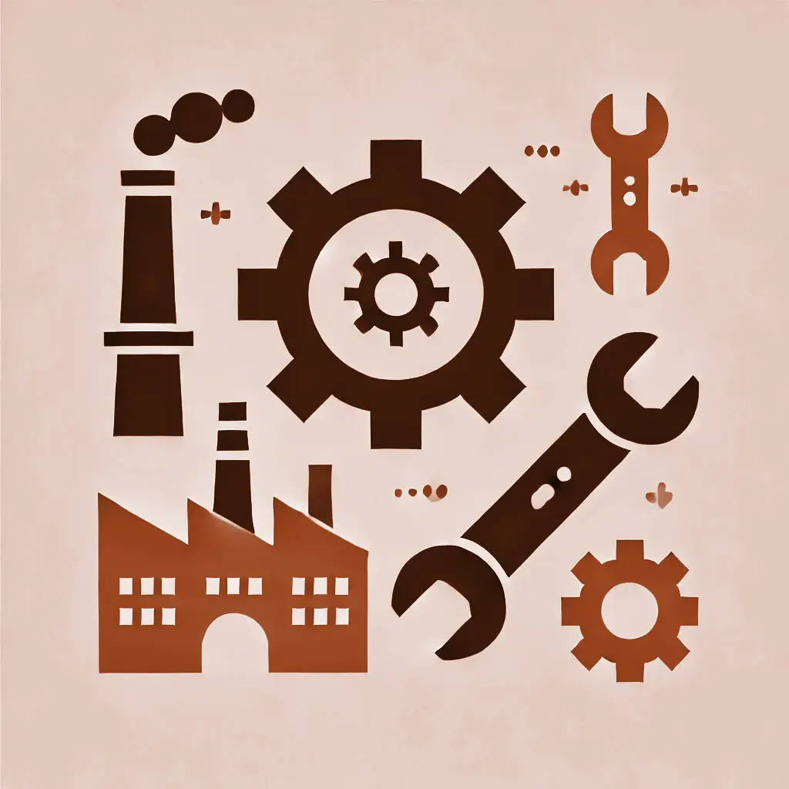

Historia på Ukrainska
Flodkulturer på Ukrainska
Antikens Grekland på Ukrainska
Romarriket på Ukrainska
Amerikanska Revolutionen på Ukrainska
Franska Revolutionen på Ukrainska

Industriella Revolutionen på Ukrainska
Nationalism, Kolonialism & Imperialism på Ukrainska
Första Världskriget på Ukrainska
Mellankrigstiden på Ukrainska
Andra Världskriget på Ukrainska
Förintelsen på Ukrainska
Kalla Kriget på Ukrainska